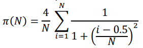

Processos
O pacote multiprocessing suporta processos de spawning, oferecendo simultaneidade local e remota, evitando efetivamente o Global Interpreter Lock usando subprocessos em vez de threads. Devido a isso, o módulo de multiprocessamento permite que o programador aproveite totalmente vários processadores em uma determinada máquina. Ele roda em Unix e Windows.
Exemplo de aplicação:
from multiprocessing import Pool
import time
def ola(n):
time.sleep(10)
print("ola "+str(n))
if __name__ == '__main__':
pool = Pool(processes=2)
start = time.time()
r1 = pool.apply_async(ola, [1])
r2 = pool.apply_async(ola, [2])
pool.close()
pool.join()
end = time.time()
print('Time taken in seconds -', end - start)
Exercício:
Calcular uma aproxima√ß√£o do valor de ùúã a partir da seguinte s√©rie:

De acordo com a s√©rie anterior, a precis√£o do valor de ùúã aumenta quanto maior for o par√¢metro N utilizado.
Como refer√™ncia, podesmos assumir o valor exato de ùúã como sendo o fornecido pela biblioteca numpy:
import numpy as np
print(np.pi)
O objetivo de exerc√≠cio √© computar uma aprocima√ß√£o de ùúã usando a f√≥rmula anterior para diferentes valores de N.
Usando a biblioteca multiprocessing, escreva um programa em python que:
-
Cria um pool de processos para rodar tarefas em paralelo
-
O tamanho do pool deve ser o número de cores da sua CPU menos 1 (8 cores -> pool de 7 processos)
-
Escreva uma função que rode em paralelo, chamada py_pi. A função deve receber como parâmetro o valor
Nque especifica o número de termos paa calcular a aproxima√ß√£o de ùúã. -
A função deve imprimir o valor calculado, o valor real e a diferença do caluclado para o real.
-
Rode as tarefas em paralelo, começando com N=10 aumentando 5 vezes para cada processo subsequente (por exemplo: 10, 50, 250, 1250…)
Por fim, espere todos os processos terminarem e imprima o tempo total decorrido.